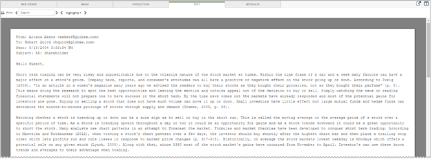
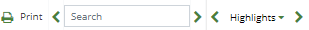

Click  to display the Print window. Select the desired print options.
to display the Print window. Select the desired print options.
Displays the current document in plain text format. It displays the data in the EXTRACTEDTEXT field..


Click to display the Print window. Select the desired print options.
Enter a search term in the  field. All instances of the search term are highlighted in yellow throughout the document. Click the Search arrows < > to move backwards or forwards to locate each highlighted term in the document. Clear the search box to remove the highlighted terms in the document.
field. All instances of the search term are highlighted in yellow throughout the document. Click the Search arrows < > to move backwards or forwards to locate each highlighted term in the document. Clear the search box to remove the highlighted terms in the document.
Click  to display the
to display the

The previous figure shows three persistent highlighted group terms. For each group term, the administrator added related key words. For example, related key words for financial may include: returns, deficits, profits, losses, etc. If any of these key words appear in the document, they will be highlighted with the same background color and text color as shown in the menu. The number in the parenthesis next to the group term indicates the number of times any of the key words associated with that group term appear in the document. To view the related key words in the form of a tool tip, hover over the desired persistent highlighted group term with the mouse pointer. By default all persistent highlighting group terms are selected in the menu. Clear the persistent highlighted group term check box to clear the related key words from the document.
Click the Highlights arrows < > to move backwards or forwards to locate each highlighted key word in the document. See
|
|
Note: The item [Search Terms] (n) only appears in the persistent highlighted group terms menu if an/a Advanced/Visual Search was conducted and contained a Text search. The entire search phrase is highlighted and considered one search hit. |